Round 283, three owner rulings on the s in one pass. ".93/.82 wins" — the head keeps its drawn reach of 0.93 (round 282 had stretched it per weight to hold the old width; the letter is now 10% narrower and the head tucks over the bowl). "for all s, make the top equally or less visually heavy than the bottom" — the foot keeps the c’s finial (the 1.10 swell at the c’s end width) and the head’s end is 0.85 of the foot’s, tapering into its face instead of swelling; the foot’s start mirrors the head’s about the two apexes. Both styles read the same dial. "deburr the 900 s" — the Black’s s stood a nub into each aperture: not a fold and not a sliver, but the pen’s width climbing 54 to 136 across the tightest bend; above stem 84 the pen widths are averaged over ±0.6 stem of path before the finials go on, which clears both. Before (round 282) then after, native pixels.
| font | s advance, before | after | head end width | foot end width | s top | c top |
|---|---|---|---|---|---|---|
| roman 400 | 399 | 361 | 57 | 67 | 448 | 441 |
| roman 700 | 436 | 400 | 96 | 113 | 451 | 438 |
| roman 900 | 466 | 420 | 123 | 144 | 452 | 436 |
| roman 200 | 381 | 347 | 39 | 46 | 445 | 442 |
| italic 400 | 292 | 292 | 56 | 66 | 435 | 441 |
| bold italic 700 | 337 | 337 | 77 | 91 | 452 | 458 |
Gates at baseline in all six fonts: only the s and its composites moved, no kern pair changed, glitch and touch counts unchanged, no dents.
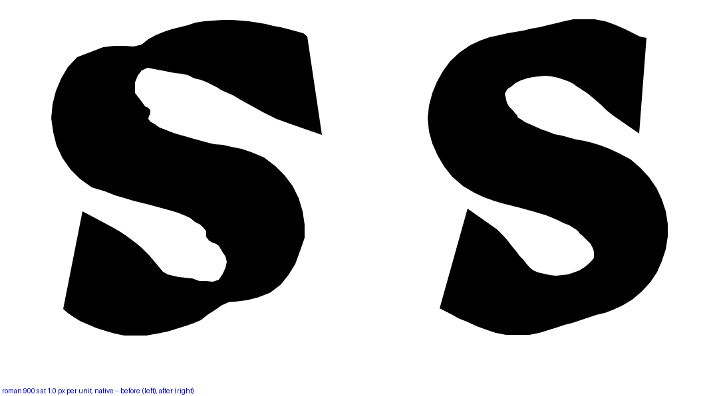
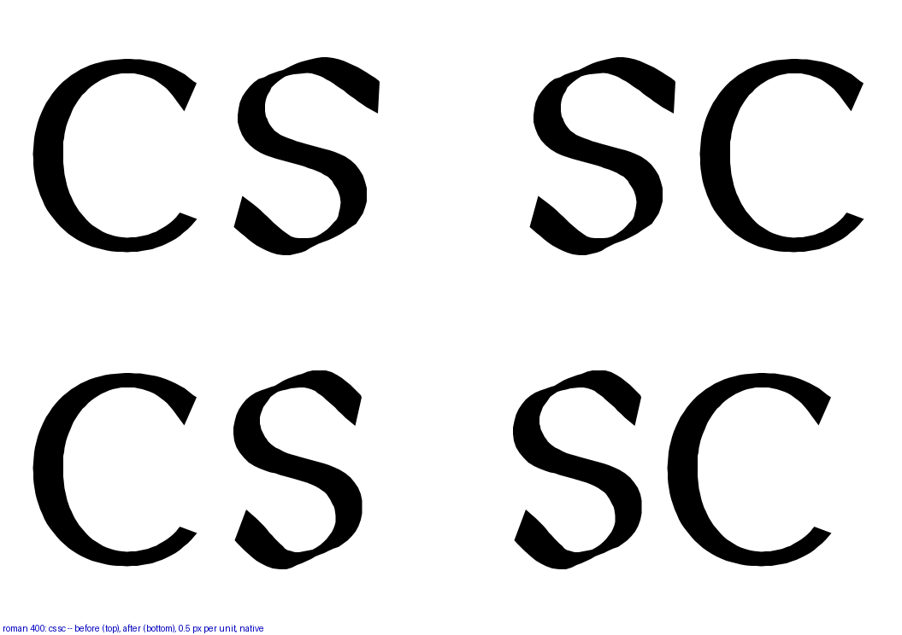
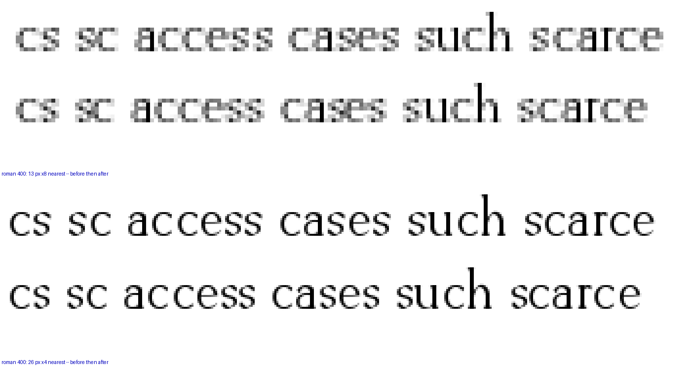
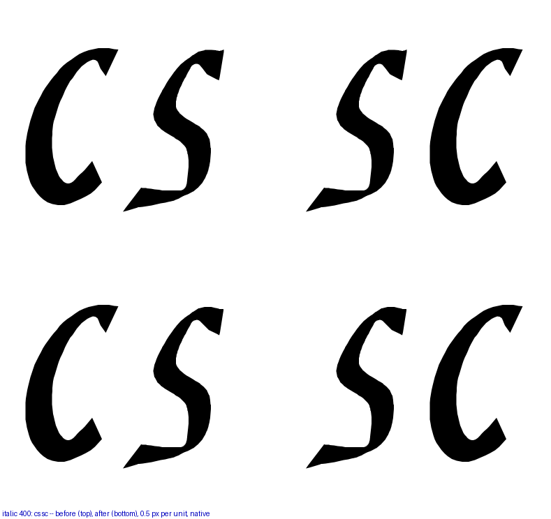
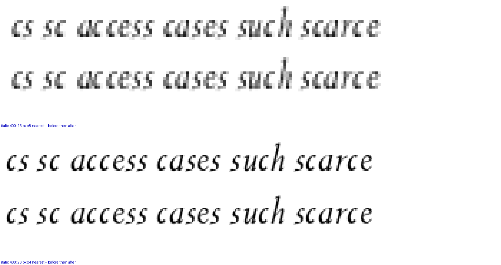
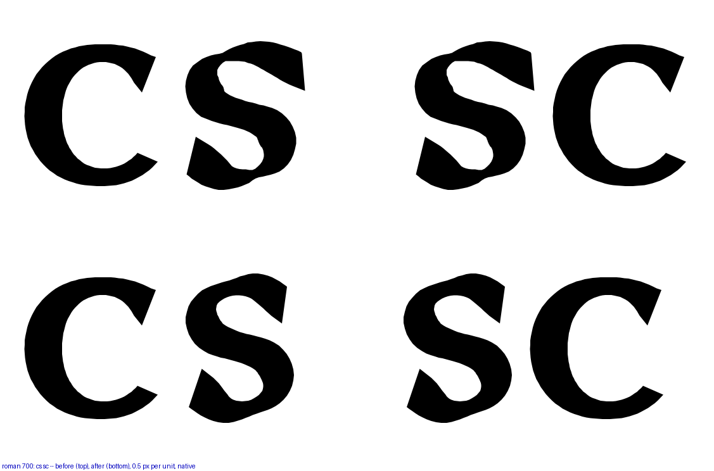
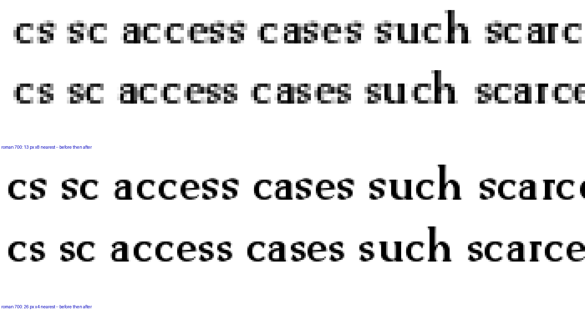
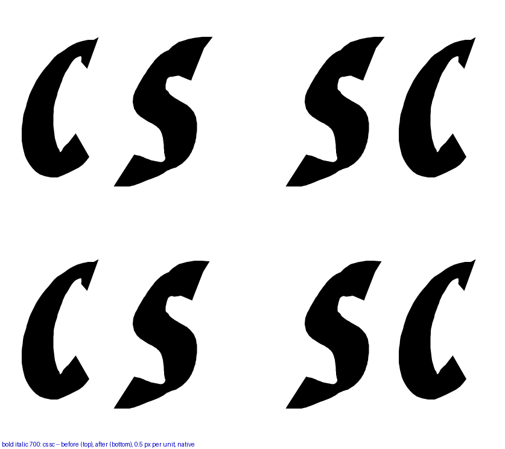
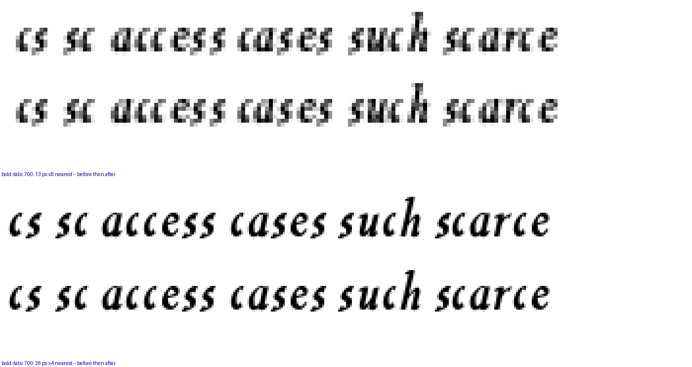
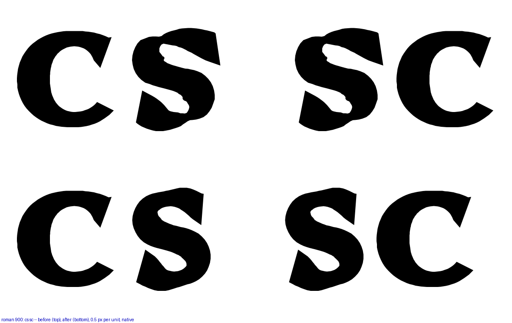
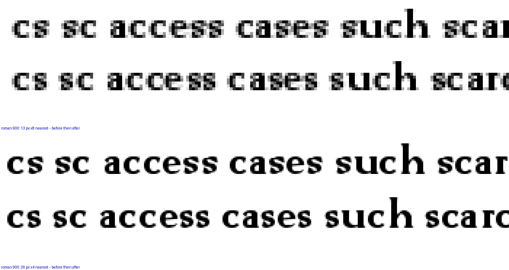
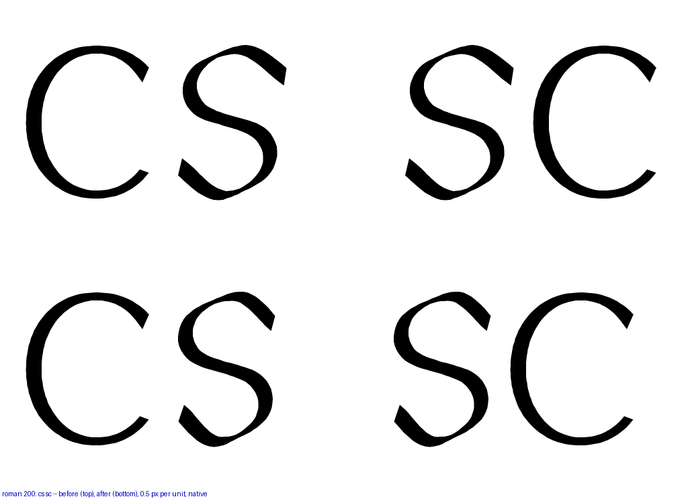
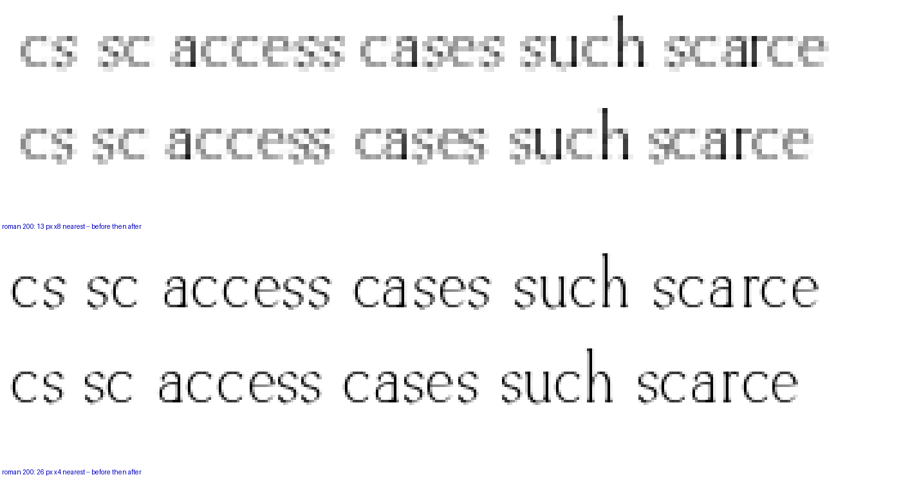